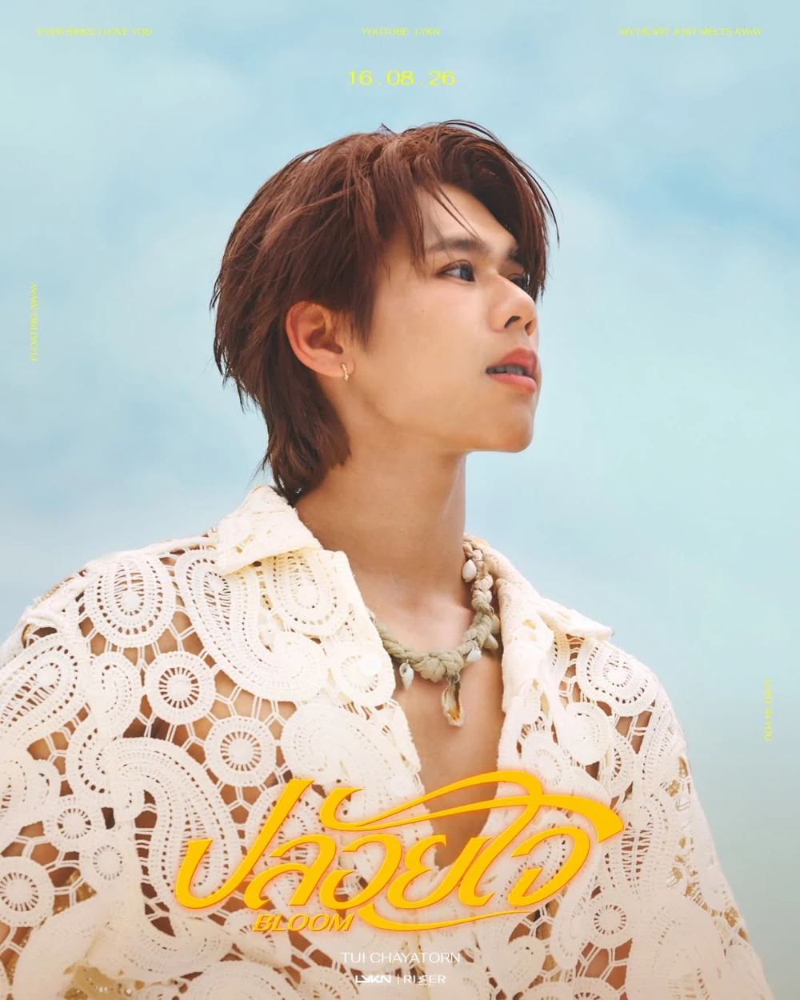
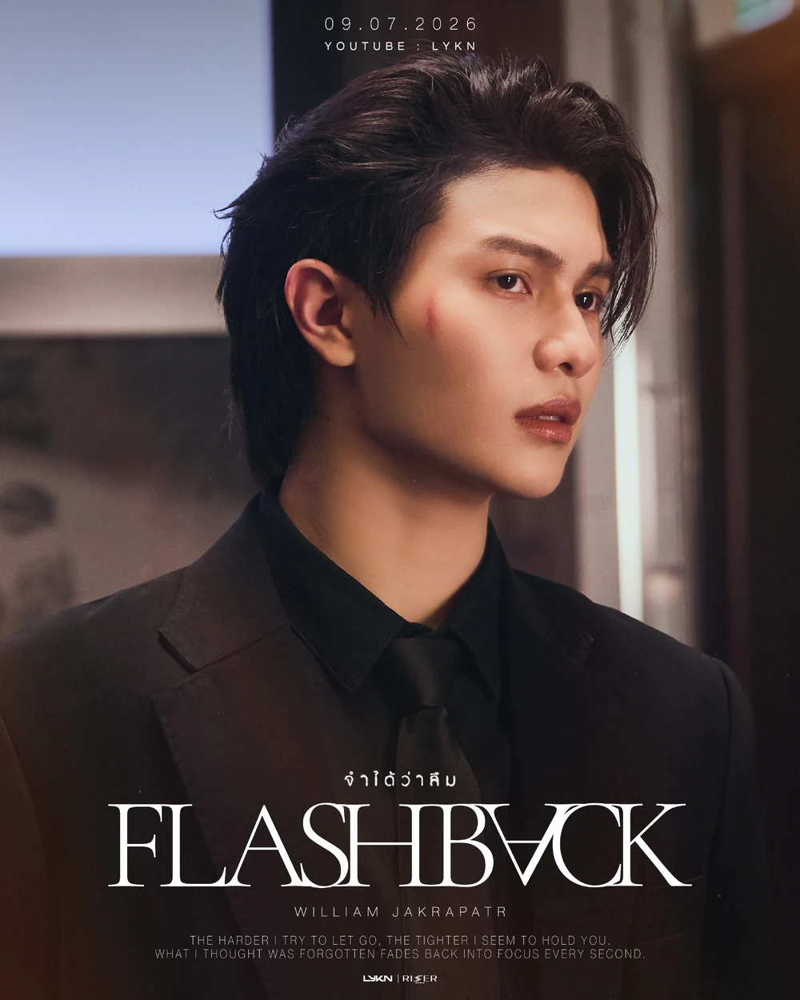
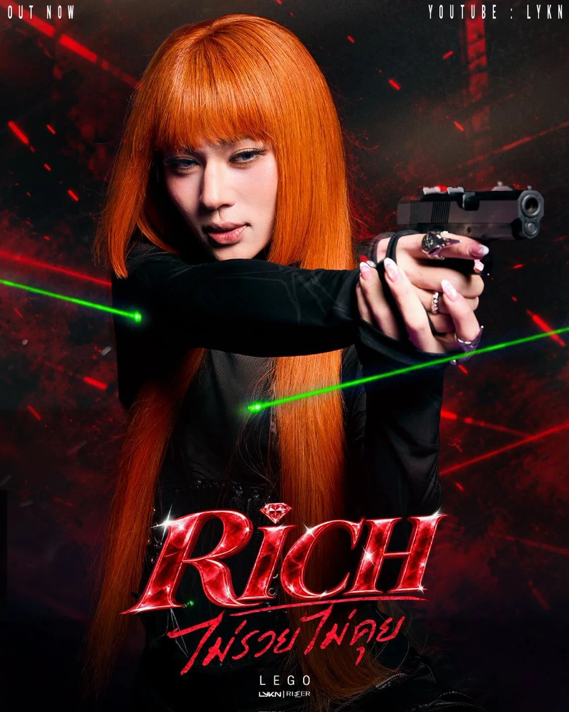
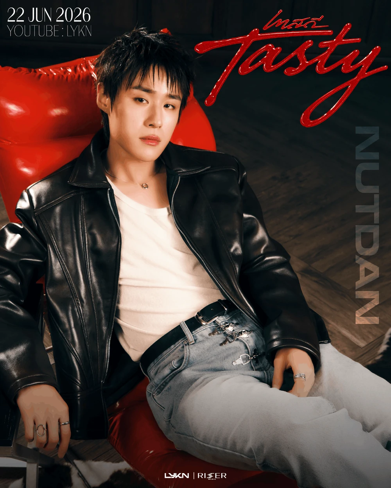
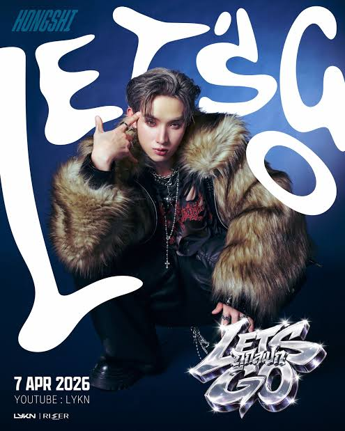

O LYKN é um grupo de boy band tailandês que se destacou no cenário do T-Pop com seu estilo único e performances de alto nível.
Formado através do reality show de sobrevivência Project Alpha, o grupo debutou em maio de 2023 com o single "MAY I?" e é composto por Hong,
Nut, Tui, William e Lego.
O nome LYKN é um homófono de "Lycan", simbolizando a força e a transformação artística dos membros.
Essas são algumas das músicas mais populares do LYKN, mas há muito mais!
TOUR
A passagem pelo Brasil foi confirmada durante o evento GMMTV 2026 MAGIC
RISER
VIBES MAXIMIZED, com apresentação
marcada para São Paulo no dia 9 de agosto de 2026, domingo .
Este show faz parte da primeira turnê mundial de grande escala do grupo, a "Dusk & Dawn World Tour 2026", que inclui 18 cidades internacionais.
SOLOS





SÉRIE
ThamePo é uma série que acompanha Po, um jovem que recebe a missão de produzir um documentário sobre a MARS, uma boy band que está prestes a se separar. Durante o trabalho, ele se aproxima de Thame, o líder do grupo, que está prestes a seguir carreira solo.
Enquanto Po tenta entender os conflitos entre os integrantes, os dois acabam criando uma conexão especial e desenvolvendo sentimentos um pelo outro.